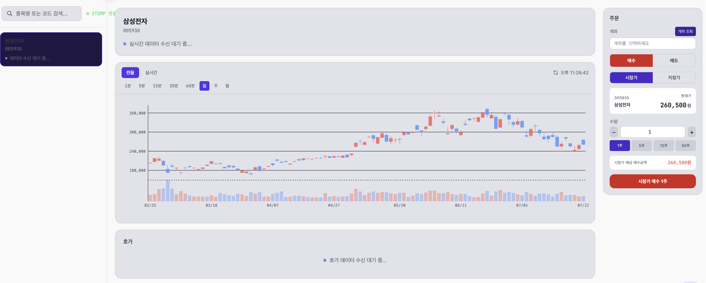

LLM을 정량 평가하고 안전하게 운영하고 그 화면까지 만든 풀스택
모놀리식 → MSA → LLMOps로 이어진 설계 성장의 마지막 매듭. RAG 답변 품질을 LLM-as-a-Judge로 정량 평가하고 Prometheus·Loki·Claude를 묶어 알림에 원인 분석과 복구 액션까지 자동 부착하는 시스템을 설계·구현했습니다. AI를 외부 API로 덧붙이는 대신 운영 모니터링 시스템의 일부로 통합했습니다.
ants-camp — 개미배움캠프 · 가상 주식 투자 대회 플랫폼
서비스 6대 핵심 기능
P · 대다수 RAG 프로젝트는 답변 품질을 "느낌"으로 판단하고 모델 교체를 "감"으로 결정 → 품질 회귀(regression) 위험을 막을 정량 체계 필요. 특히 LLM 평가의 가장 알려진 함정 self-preference bias(LLM이 자기 출력에 더 후한 경향, 연구로 보고됨)가 차단되지 않으면 평가 결과 자체가 신뢰 불가.
A · 검색 → 채점 → 비교 3단계로 정량 평가 파이프라인 구성. self-preference bias는 코드 레벨에서 차단 + Judge 2종 교차 검증으로 다중 방어.
- 검색 — pgvector 의미검색(topK×3 후 유사도 0.3·score-gap 0.8 컷오프 → 최종 topK=5)
- 채점 — Relevance / Faithfulness / ContextPrecision 3축 점수화
- 비교 — Pairwise A/B 위치 교차(앞쪽 편향 회피)
- bias 방어 — Judge==생성모델이면 채점 skip · Judge temperature 0 · Judge 2종(claude-sonnet-4-6 + gpt-4o) 교차 검증
R · 점수·승률 기반으로 gpt-4o-mini → claude-haiku 교체. OpenAI 자사 gpt-4o조차 gpt-4o-mini를 낮게 평가 → 계열 편향 데이터로 반박.
★ 차별점 — 어떻게 차단했나 (3겹 방어)
Judge 모델 == 응답 생성 모델이면 채점 자체를 skip. 자기 출력에 후한 경향을 회피.
claude-sonnet-4-6 + gpt-4o 양쪽 모두 돌려 한 모델에 결정 의존 X. OpenAI 자사 gpt-4o조차 gpt-4o-mini를 낮게 평가.
A/B 위치를 교차해 양방향 비교 → 위치 편향(앞쪽 유리)까지 회피. 결과: 6승 0패.
결과 — 데이터 기반 의사결정
| 지표 | gpt-4o-mini (n=28) | claude-haiku (n=12) |
|---|---|---|
| faithfulness | 2.38 | 4.04 |
| relevance | 2.38 | 4.00 |
| contextPrecision | 2.32 | 3.92 |
| 환각률 (faith < 3) | 64.3 % | 8.3 % |
| Pairwise (A/B 교차) | 0승 | 6승 0패 (TIE 0) |
표본 40건은 통계적 검정력 충분치 않으나 ① 두 Judge 동일 방향 ② Pairwise 동일 방향 → 방향성 견고. 정밀화 시 골든셋 200건+ 확대 및 사람 평가자 inter-rater agreement 측정으로 Judge 신뢰도 자체 검증 계획.
 CLICK TO ZOOM
CLICK TO ZOOM
P · 토이/부트캠프 프로젝트는 측정 시스템 부재로 정량 수치를 못 남기는 경우가 많음. "측정 가능한 시스템을 처음부터 만들었다"는 것 자체가 차별점이며 alert 룰 설계 역시 노이즈와 심각도를 함께 고려해야 함.
A · 관측 스택을 주도 구축하고 alert 룰 7종을 `for:` 지속조건으로 차등 설계 — "터지면 큰가(심각도) × 자주 출렁이나(노이즈)"를 함께 반영.
- 수집 — Prometheus(15s scrape · 10 job) + Promtail(
docker_sd_configs컨테이너 자동 발견) - 저장 — Loki(로그) · Prometheus TSDB(메트릭)
- 시각화 — Grafana provisioning IaC(대시보드 코드 관리)
- 알림 — Alertmanager + 룰 7종 차등 설계(아래 표)
R · MTTD < 1분, 반복 알림 LLM 비용 0(dedup). SPOF 해소 fallback까지 완비.
| 룰 | 임계 / for | 심각도 | 근거 |
|---|---|---|---|
| ServiceDown | up == 0 / 1m | critical | scrape 15s × 4회 연속 실패라야 발동 → 순간 끊김과 구분 |
| ConnPoolPending | > 3 / 1m | critical | 대기 자체가 고갈 신호 → 가장 짧게 |
| HighCPU | 0.8 / 2m | critical | throttling 시작 구간, 100% 직전 여유 |
| HighMemory · ConnPoolNear · HttpError | / 2m | warning | 스파이크와 추세 구분 가능한 지점 |
| HighGcOverhead | 0.1 / 5m | warning | 단기 변동 잦아 가장 길게 |
★ SPOF 해소 — notification-service 자기 장애 시 Alertmanager match_re(라벨 정규식 매칭으로 알림 라우트 분기) fallback으로 Slack 직통(LLM 분석 없는 단순 텍스트로 알림 보존).
 CLICK TO ZOOM
CLICK TO ZOOM
P · Prometheus → Slack 단순 알림은 "임계값 초과" 사실만 전달 → 운영자가 Grafana·터미널을 왕복하며 원인 추적에 시간 소요(MTTR의 대부분). 동시에 LLM 자동 실행은 운영 컨테이너를 건드리므로 위험.
A · Alertmanager webhook부터 Slack 메시지까지의 파이프라인을 dedup → 컨텍스트 수집 → LLM 분석 → HITL 액션 4단계로 구성. AI는 추천까지, 실행은 사람 클릭이라는 안전선 확보.
- dedup — Redis fingerprint(
SET NX, TTL 1h)로 중복 알림 차단 - 컨텍스트 수집 — Prometheus(CPU/Heap/에러수/응답시간) + Loki(최근 10분 에러 로그) 자동 fetch
- LLM 분석 — Claude(haiku)가 메트릭·로그 기반 RCA(원인 분석 + 권장 조치) 생성
- HITL 액션 — Slack Block Kit으로 분석 + 복구 버튼 4종(restart / rollback / cache-clear / false-alarm) 동시 노출
R · 알림 수신 후 수 초 내 "근거 메트릭/로그 + 권장 조치" 자동 게시. AI를 운영 모니터링 시스템의 일부로 통합.
 CLICK TO ZOOM
CLICK TO ZOOM
P · LLM 제안 시스템은 ① 인프라 서비스 오작동(LLM이 gateway/kafka에 destructive action 권유), ② 외부 위변조 요청(공개 endpoint 노출), ③ LLM 입력으로의 PII/시크릿 유출 등 다층 위험을 동시에 가짐.
A · 세 위험에 각각 독립적 방어선을 둠 (아래 3겹).
R · 세 시나리오 모두 fallback 동작 검증 완료 — ① notification-service 자기 장애 시 Alertmanager match_re fallback으로 Slack 직통, ② LLM API 장애 시 단순 텍스트 fallback, ③ 비동기 ingest 실패 시 Reconciler 자가복구.
gateway·kafka 등 infrastructureJobs는 SlackBlockBuilder에서 버튼 자체 미노출 + executeAction 진입 시 화이트리스트 차단. API/payload 조작 우회까지 방어.
공개 endpoint에 전용 필터: HMAC-SHA256 서명 검증 + timestamp 5분 초과 거부(replay) + MessageDigest.isEqual constant-time 비교(timing attack). body는 CachedBodyRequest 래핑.
token · password · secret · bearer → [REDACTED], 이메일 → [EMAIL], 로그 4000자 제한. 외부 LLM 호출 직전 최종 검증.
한 기능을, 서버부터 화면까지 끝까지
사용자 화면과 관리자 콘솔 전체를 React·TypeScript·Tailwind로 구축했습니다. 백엔드에서 만든 RAG 평가·AIOps 기능을 운영자가 실제로 쓰는 화면까지 이어 만든 것이, 이 프로젝트에서 풀스택으로 일한 방식입니다.
사용자 화면
- 실시간 시세 티커·캔들 차트 (Recharts) · 종목 검색·상세
- 매매 — 호가창 + 주문 패널, WebSocket(STOMP) 시세 구독
- 투자 대회 — 목록·상세·실시간 순위 대시보드
- 포트폴리오·마이페이지 — 보유 종목·평가 손익
- AI 챗봇 — RAG 답변 마크다운 렌더링
관리자 콘솔
- 회원·대회 관리 — 검색·필터, 대회 규칙 설정
- RAG 운영 콘솔 — 문서 등록·평가 실행
- Pairwise A/B 비교 결과 시각화 · 프롬프트 버전 관리
- 알림 관리 — AIOps 알림 목록·상세
 CLICK TO ZOOM
CLICK TO ZOOM
 CLICK TO ZOOM
CLICK TO ZOOM
실시간 시세 — WebSocket(STOMP) 구독 설계
체결가·호가를 @stomp/stompjs로 실시간 수신합니다. SockJS 폴백 없이 네이티브 WebSocket으로 연결하고,
종목코드별 /topic/price/{code} · /topic/orderbook/{code} 두 채널을 구독합니다.
- 선언적 구독 동기화 — 스토어의 구독 종목 변경을 감지해 추가된 종목만 구독 · 빠진 종목만 구독 해제
- 재연결 3초 + 자동 재구독 — 재연결 시 스토어에 남은 종목 전체를 복구. KIS/STOMP 이중 연결 상태는 배지로 시각화
- REST 폴백 — 장 마감 등 실시간 데이터가 없으면 현재가 REST 조회로 대체해 빈 화면 방지

CLICK TO ZOOM